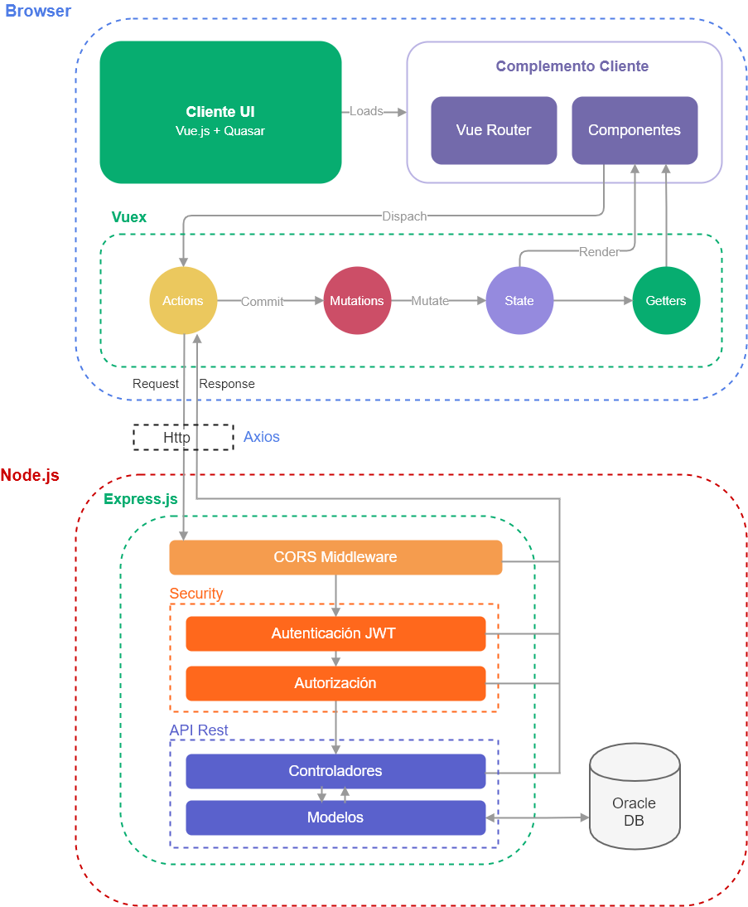
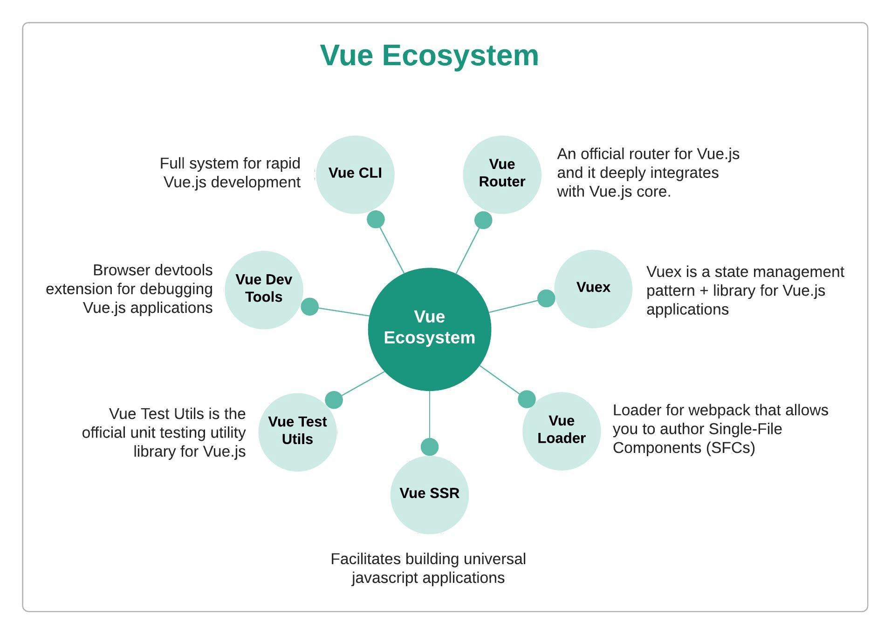

Arquitectura de Software
Tecnologías
¿Por qué Node.js?
- Porque puede ejecutarse en una variedad de servidores, entre los que destacan Microsoft Windows, Mac OS X y Unix.
- Porque plataformas como Linkedin, eBay o PayPal fueron creadas con Node.js, lo que indirectamente es una muestra de su calidad.
- Su rendimiento ha sorprendido a programadores de todo el mundo, pues permite crear trabajos de gran calidad y disminuye el margen de experimentar errores técnicos. Su parecido con JavaScript hace que este lenguaje sea más fácil de aprender.
- Node.js permite decenas de miles de conexiones simultáneas en un único servidor. Hasta el momento la mayoría de los programas de servidor permiten un máximo de aproximadamente 4.000 usuarios conectados al mismo tiempo, por lo que para aumentar esta cifra las empresas deben agregar servidores, problema que desaparecería con el uso de Node.js ya que este puede soportar decenas de miles de conexiones concurrentes y así disminuir los costes de infraestructura.
¿Por qué Node.js?
- Es ideal para manejar aplicaciones de alto tráfico de usuarios y eventos, como por ejemplo Twitter donde a cada segundo se envían cientos de miles de tuits.
- El desarrollo de aplicaciones es mucho más rápido, las aplicaciones también y por lo tanto el usuario puede acceder a una mejor experiencia de uso.
- El hecho de permitir a los desarrolladores escribir en JavaScript tanto del lado del servidor como del lado del cliente hacer que la transferencia de datos entre estos puntos sea más rápida y por lo tanto reduce los tiempos de trabajo.
- Es la mejor opción del mercado para aplicaciones en tiempo real, como chats online o determinados juegos.
¿Por qué Vue.js?
- Gran escala. Vue.js puede ayudar a desarrollar plantillas reutilizables bastante grandes que se pueden crear sin tiempo adicional asignado para eso según su estructura simple.
- Diminuto tamaño. Vue.js puede pesar alrededor de 20 KB manteniendo su velocidad y flexibilidad que permite alcanzar un rendimiento mucho mejor en comparación con otros framework.
- Adaptabilidad. Proporciona un período de cambio rápido de otros frameworks a Vue.js debido a la similitud con Angular y React en términos de diseño y arquitectura.
- Impresionante integración. Vue.js se puede utilizar tanto para crear aplicaciones de una sola página como para interfaces web de aplicaciones más difíciles. Lo principal es que las partes interactivas más pequeñas se pueden integrar fácilmente en la infraestructura existente sin ningún efecto negativo en todo el sistema.
¿Por qué Vue.js?
- HTML habilitado. Esto significa que Vue.js tiene muchas características similares con Angular y esto puede ayudar a optimizar el manejo de bloques HTML con el uso de diferentes componentes.
- Documentación detallada Vue.js tiene una documentación muy circunstancial que puede ajustar la curva de aprendizaje para los desarrolladores y ahorrar mucho tiempo para desarrollar una aplicación utilizando solo los conocimientos básicos de HTML y JavaScript.
Arquitectura Cliente - Servidor
Una arquitectura cliente servidor posee un flujo definido en sus procesos y su funcionamiento es básicamente el despliegue exitoso de este: los clientes inician solicitudes a los servidores, estos se encargan de tramitar las solicitudes y devolver las respuestas apropiadas. La arquitectura propuesta está basada en un conjunto de patrones abstractos que definen la forma y estructura en que interactúan los actores y componentes en todas sus capas (interfaces, comunicación, etc.).
Modelo - Vista - Controlador
A su vez se ha utilizado el patrón de programación modelo-Vista controlador (MVC), el cual permite a cada módulo separar la lógica, presentación y acceso a los datos.
Implementación de la arquitectura
En términos generales la arquitectura opera a tres capas, Presentación, Servicio, y Negocio
Implementación de Cliente
El cliente está compuesto únicamente por los lenguajes HTML (Quasar Framework), CSS (stylus) y Javascript (Vue.js).
Consideraciones generales del cliente
- Para desarrollar las hojas de estilos, se utilizan preprocesadores en este caso stylus. Los preprocesadores con lenguajes que se utilizan para abstraerse, mejorar, potenciar o agregar nuevas características que no están presentes en el lenguaje objeto, en este caso CSS.
- Para desarrollar los archivos javascript se utilizan las ultimas características de ECMASCRIPT 6 y se transpilan con babel.js para retrocompatibilidad con ECMASCRIPT 5
- Se utilizan variadas librerías para realizar tareas genéricas, como validaciones, efectos, gráficos, etc.; Todas estas librerías están desarrolladas en javascript.
- Se utilizan librerías y herramientas que permitan hacer que las páginas web sean responsivas tal como Quasar Framework.
- Los navegadores soportados para visualizar las páginas son Internet Explorer (IE) 11+, Mozilla Firefox y Google Chrome.
Autorización (JWT)
Json Web Token es un conjunto de medios de seguridad para peticiones http y así representar demandas para ser transferidos entre dos partes (cliente y servidor). Las partes de un JWT se codifican como un objeto JSON que está firmado digitalmente utilizando JSON Web Signature( JWS ). JWT se utiliza para autenticar usuarios con el API REST de Node.js.
Implementación del servidor
Api Rest
Una API (siglas de 'Application Programming Interface') o interfaz de programación de aplicaciones, es algo así como un contrato de codificación, especifica las formas en que un programa puede interactuar con una aplicación. Es una colección de recursos con tres aspectos definidos:
- El URI base para la API Web, como http://ejemplo.com/recusos/
- El tipo de datos soportados por la API web. Esto es a menudo JSON, pero puede ser cualquier otro tipo de medio de Internet válido siempre que se trate de un estándar de hipertexto válido.
- El conjunto de las operaciones de apoyo de la API web utilizando métodos HTTP (por ejemplo, GET, PUT, POST o DELETE)
Express.js
Express es un framework de aplicaciones web para Node.js flexible que proporciona un robusto conjunto de características para crear aplicaciones web de una o varias páginas, e híbridos , direccionando las peticiones hechas del lado del cliente de manera correcta y obteniendo un reporte de las transacciones y procesos en el servidor.
Servidor socket.io
El núcleo del servidor SOCKET está implementado sobre un Servidor Node JS. Este componente provee interfaces de comunicación por medio de socket, que permiten el intercambio de datos entre el cliente y el servidor.
- Crea instancias de socket servidores a los que se conectan las instancias de la Plataforma Web. Permite además recibir y enviar mensajes a la Plataforma web en “tiempo real”.
import express from 'express' //framework express para nodejs
import bodyParser from "body-parser" // para enviar peticiones post
import morgan from "morgan" // para ver el log de las peticiones cuando estamos en modo DEV
import helmet from "helmet" //ayuda a proteger la aplicación de algunas vulnerabilidades web conocidas mediante el establecimiento correcto de cabeceras HTTP
import compression from "compression" // modulo de compresion gzip para disminunir el tamaño del cuerpo de respuesta
import api from './api' //importamos las rutas de la api
import cors from "cors";
import SocketIO from "socket.io";
import { Server } from 'http'
const app = express() // instanciamos el servidor express
//seteamos el host y el puerto
const host = process.env.HOST || 'localhost'
const port = process.env.PORT || 3000
app.set('port', port)
//----------------------------
//middlewares
app.use(helmet())
app.use(compression())
app.use(morgan('dev'));
app.use(bodyParser.urlencoded({ extended: false }));
app.use(bodyParser.json());
app.use(cors())
app.use(express.static('public'));
var server = Server(app)
const io = SocketIO(server)
//API Routes
app.use('/api', api(io))
// Listen the server
server.listen(port, host)
console.log('Server listening on ' + host + ':' + port)
Definiendo una ruta en nuestra API REST
Interacción con Base de datos
Definiendo ruta http
Ecosistema Vue.js
Vue Router
Vuex
Quasar framework
Awesome Vue